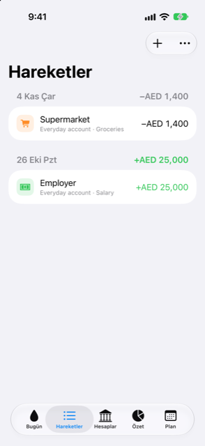

Kılavuz › Parayı kaydetme
Hareket listesi
Olan her şey, filtreler, arama, geri alma, çoğaltma, bölme.
Hareket, Damla'nın kaydettiği her işlemi yeniden eskiye doğru gün gün gruplayarak listeler. Ne olduğunu görmek, bir ödemeyi yeniden bulmak ve bir kaydı değiştirmek, silmek, çoğaltmak ya da bölmek için burayı kullanırsınız.

Ne zaman kullanılır
- Bir gün ne girdi, ne çıktı ve günün toplamı ne olduğuna bakmak için.
- Son bakışınızdan bu yana otomatik banka bildirimlerinin ne eklediğine bakmak için.
- Bir ödemeyi adına, notuna ya da hesabına göre bulmak için.
- Kaydedilen bir işlemi düzeltmek, kaldırmak, yinelemek ya da bölmek için.
Adım adım
- Hareket sekmesini açın. Liste, Damla'nın bildiği her günü yenisi önce olacak şekilde gösterir.
- Bir şey eklemek için Ekle menüsüne (artı düğmesine) dokunun ve Cümle yazın ya da Form doldurun seçeneğini seçin.
- Listeyi daraltmak için Filtrele'ye dokunun. Göster bölümünde yalnızca bir tür seçin: Her şey, Bildirimlerden, Harcamalar, Gelirler, Aktarmalar, Düzeltmeler ya da Açılış bakiyeleri. Aynı menüde, Hesap altında tek bir hesabı ya da Tüm hesapları seçin.
- Bir şey bulmak için listenin üstündeki arama kutusuna yazın. Yazdığınız, alıcılarla, notlarla ve hesap adlarıyla karşılaştırılır.
- Bir işlemi değiştirmek için üzerine dokunun. Normal bir kayıt formda açılır; kategorilere bölünmüş bir kayıt bölme sayfasını açar.
- Bir işlemi sola kaydırın ve kaldırmak için Sil'e dokunun.
- Gün listesindeki bir satırda, diğer eylemleri görmek için sağa kaydırın (sol kenardan): Çoğalt (bir harcama ya da gelir için), Taksitlendir (kart alışverişleri için) ve Böl. Bir harcamayı ya da geliri basılı tutarak Çoğaltma eylemine erişebilirsiniz.
- Tam listeyi yeniden görmek için Filtre'yi ayarlayın ya da arama kutusunu temizleyin.
Bilmek iyi olur
- Her gün başlığının sağındaki sayı o günün toplamıdır: giren para eksi çıkan para. Kendi hesaplarınız arasında para aktarmaları ve kart ödemeleri bu toplama sayılmaz; yalnızca bunların olduğu bir gün hiç toplam göstermez.
- Çıkan para eksiyle, giren para artıyla ve yeşille gösterilir. Kendi hesaplarınız arasında para aktarmaları ve düzeltmeler gridir. Hâlâ tahmini olan yabancı para birimli bir alışveriş, ekstresi onaylayıncaya kadar tutarını
≈işaretiyle gösterir. - Açılış bakiyeleri olay değildir, bu yüzden düz listede yer almaz. Görmek için Filtrele > Açılış bakiyeleri yolunu kullanın ya da arama yapın.
- Çoğalt, aynı tutar, hesap, kategori ve alıcıyla bugünün tarihini taşıyan yeni bir form açar. O formda Kaydet'e dokununcaya dek hiçbir şey kaydedilmez. Hesaplar arası aktarmalar, kart ödemeleri ve bölünmüş işlemler çoğaltılamaz.
- Böl, birkaç kategoriyi birden karşılayan tek bir ödeme içindir; örneğin hem erzak hem de bir okul kalemi içeren bir market alışverişi gibi. Pay edilecek bir şey kalmayana dek her parça için bir kategori ve bir tutar seçin. Ödemenin kendisi değişmez; zaten bölünmüş bir işlem üzerine dokunduğunuzda aynı sayfayı açar.
- Taksitlendir, yalnızca henüz bir taksit planında olmayan bir kart alışverişinde görünür. Taksit formunu açar; orada bankanızın belirttiği sayıları yazarsınız — aylık taksit, ay sayısı, varsa ücret ve ilk tarih — ve Dönüştür'e dokunursunuz. Bunu yapana kadar hiçbir şey değişmez.
İlgili
Anlaşılmayan ya da eksik bir şey mi var? support@raveniq.ai adresine yazın ve hangi sayfa olduğunu belirtin.